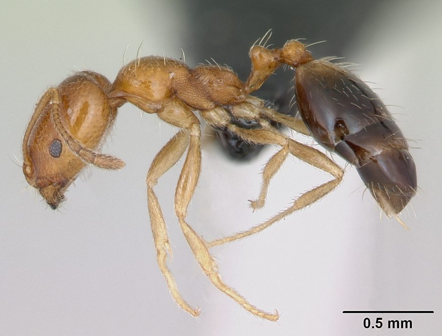

सिंगापुर चींटीSingapore Ant
Monomorium destructor · Formicidae · INS-0176

- Scientific name वैज्ञानिक नाम
- Monomorium destructor (Jerdon, 1851)
- Family कुल
- Formicidae
- Hindi हिंदी
- सिंगापुर चींटी
- Local names स्थानीय नाम
- singapore ant, ant
- Status here यहाँ की स्थिति
- native
- Movement आवागमन
- Resident, here all year
- Known from कहाँ दर्ज
- Others have published records from the wider Awadh–Purvanchal plain, none yet from Basti–Ayodhya अवध–पूर्वांचल से दूसरों के प्रकाशित अभिलेख, बस्ती–अयोध्या से अभी नहीं
- IUCN IUCN
- not evaluated
- Review समीक्षा
- audited and independently read
When to look कब देखें
Present all year. साल भर मौजूद।
सिंगापुर चींटी / Singapore Ant
Monomorium destructor (Jerdon, 1851) — Formicidae
सिंगापुर चींटी — बहुत छोटी, पीली-भूरी चींटी जो दक्षिण एशिया में मूल रूप से थी। अब दुनिया भर में फैली हुई है। घरों में छिप जाती है, खाने में घुसती है। बहुत-सी रानियाँ होती हैं, इसलिए कॉलोनियाँ तेजी से बढ़ती हैं। दिल्ली, मुंबई, बैंगलोर सब जगह पाई जाती है।
Quick Identification त्वरित पहचान
| Feature | Description |
|---|---|
| Size | Worker 1–2 mm; queen 3–4 mm |
| Colour | Pale yellowish-brown or tan |
| Antennae | 12-segmented, slender |
| Eyes | Small but visible |
| Behaviour | Rapid movement; trails on surfaces |
| Nests | Multiple nests; polygynous (many queens) |
Field tip: Extremely small ants around kitchens, bathrooms, and food stores. The pale yellow-brown colour and minute size are distinctive. Often seen in long trails on walls and floors. Very rapid foragers that strip food sources completely.
हिंदी — कैसे पहचानें: बहुत छोटी पीली-भूरी चींटी। रसोई में, नल के पास लाइन बनाकर दौड़ती है। कपड़े खाती है, घर के हर कोने में घुस जाती है।
Morphology आकारिकी
Biometrics:
| Measurement | Range |
|---|---|
| Worker body length | 1.0–2.0 mm |
| Queen body length | 3–4 mm |
| Antenna length | 1–1.5 mm |
Worker: Monomorphic. Extremely small, pale yellowish-brown or tan. Head is proportionally large. Eyes are present but small. Antennae are 12-segmented. Legs are slender and long relative to body size. The body is smooth and relatively hairless. No ocelli.
Queen: Noticeably larger; winged when first produced. Queens are important to the colony's success; many queens per nest allow rapid expansion.
Male: Winged, dark, rare in most populations.
Behaviour & Ecology व्यवहार और पारिस्थितिकी
A native species from the Indian subcontinent that has become invasive worldwide. The species is highly synanthropic, strongly preferring to nest indoors and in human-disturbed areas. Colonies are polygynous (with many queens) and polydomous (with multiple nests). Workers form organized foraging trails and are extremely efficient at locating and exploiting food sources. The species is omnivorous but particularly attracted to sweet foods, proteins, and oils.
Unlike most ant species, Monomorium destructor does not recognize a boundary between nests of the same colony; workers and queens move freely between nests. This allows rapid colony expansion and makes the species very difficult to eradicate from buildings. Multiple nests can span an entire building, with workers moving through walls and pipes.
The species has spread globally via human trade and is now one of the world's most successful invasive ants. It is particularly damaging in tropical and subtropical regions where year-round reproduction is possible.
हिंदी: घर के हर कोने में घोंसले बनाती है। दीवार के अंदर, पाइप में, सब जगह। खाना देखते ही सब खत्म कर देती है।
Life Cycle / Phenology जीवन चक्र
| Stage | Duration |
|---|---|
| Egg | 4–5 days |
| Larva | 15–18 days |
| Pupa | 6–10 days |
| Worker lifespan | 4–12 weeks |
| Queen lifespan | 1–2 years |
| Egg-to-worker | 25–33 days under warm conditions |
Temperature dependence: Development is fastest at 25–28°C. At 20°C, development is slowed but still occurs. No dormancy; continuous reproduction indoors.
Reproduction: Many queens per colony lay eggs continuously. Workers may play a role in regulating queen reproduction.
Host Plants or Prey आहार
Food sources:
- Sweet foods: honey, fruit, sugar solutions
- Proteins: meat, grease, oils, dead insects
- Plant materials: seeds, stored grains
- Honeydew from plant-feeding insects
Feeding: Omnivorous foragers. Workers quickly locate food, cut it into manageable pieces, and carry it back to the nest. The efficiency of their recruitment system allows them to strip a food source completely in hours.
Predators / Natural Enemies शत्रु
- Parasitoid wasps: Small parasitoids may attack queens or workers
- Spiders: Some spiders catch workers on foraging trails
- Ant-eating insects: Antlions and other insects may trap workers
- Competition from larger ants: Larger ant species may displace this species
Agricultural / Human Relevance कृषि प्रासंगिकता
Major household and agricultural pest. The Singapore Ant is one of the world's most destructive invasive ant species. In homes, the species invades kitchens and pantries, contaminating food and causing significant damage to stored goods. A single building can house hundreds of satellite nests, making eradication extremely difficult. The ants also nest in walls and pipes, sometimes causing structural problems. In hospitals, food-service establishments, and food storage facilities, the species is a major pest and potential disease vector.
In agriculture, the species tends plant-feeding insects (mealybugs, scales), protecting them from predators, which can increase crop damage. The species is also reported to cause allergic reactions in some people, and the formic acid odour of crushed ants may trigger respiratory issues in susceptible individuals.
Management: Control is extremely difficult because of the multiple nests and many queens per colony. Methods include:
- Baiting: using low-toxicity baits that workers carry to nests without dying first
- Eliminating food sources and standing water
- Sealing cracks and crevices to prevent nest expansion
- In severe infestations, professional pest control intervention may be necessary
हिंदी: बहुत खतरनाक कीट है। सिर्फ़ एक दवा या जहर से नहीं जाएगी। साफ़-सफ़ाई, दरारें भरना, साफ़ डिब्बों में खाना रखना ज़रूरी है।
Expected Locally स्थानीय रूप से अपेक्षित
Not a field record. Written from published accounts for eastern Uttar Pradesh. No confirmed local sighting yet — if you have seen it, that is what the atlas needs.
अभी तक स्थानीय पुष्टि नहीं। यह विवरण प्रकाशित स्रोतों से है, किसी अवलोकन से नहीं।
Expected in kitchens, bathrooms, and storage areas throughout Basti district and eastern UP, particularly in older buildings or those with inadequate maintenance. A specimen collected from a building with date and location would confirm a local record.
Distribution वितरण
Global range: Native to the Indian subcontinent; now cosmopolitan in tropical and subtropical regions.
In India: Very common in all states, particularly in urban and semi-urban areas.
In Uttar Pradesh: Present in all cities and towns; very common.
In Basti district / eastern UP: Expected in all buildings, particularly kitchens, bathrooms, and food stores.
Research Questions शोध प्रश्न
- What is the minimum toxicant dose in a bait that allows workers to return to the nest before dying, thus poisoning the queens? — Test different poison concentrations in bait; measure nestmate exposure.
- How quickly can a single queen establish a satellite nest and produce a new workforce? — Isolate a queen; quantify worker production and nest establishment time.
- Are there genetic differences between populations from different geographic regions, and do they affect invasibility? — Collect samples from multiple regions; perform genetic analysis.
- What is the spatial structure of a fully mature colony in a building, and how many queens does it contain? / एक घर में इस चींटी के कितने घोंसले और रानियाँ हो सकती हैं? — Map nests using genetic markers; count queens.
- Can pheromone-based disruption (pheromone traps or antagonists) reduce worker recruitment and colony efficiency? — Test pheromone treatments; measure impact on foraging and recruitment.
Similar Species मिलती-जुलती प्रजातियाँ
| Species | How to tell apart | हिंदी |
|---|---|---|
| Monomorium pharaonis (Pharaoh Ant) | Slightly larger (1.5–2 mm), slightly darker; overlap in range | थोड़ा बड़ी, गहरे रंग की |
| Aneuretus simoniM (Primitive Ant) | Much larger, different colour, different habitats | बहुत बड़ी, अलग दिख |
| Other small ants (Strumigenys, Carebara) | Different morphology; different foraging patterns | अलग तरह की चींटी |
Field rule: Extremely small (1–2 mm), pale tan ant with organized trails on kitchen or bathroom surfaces: Singapore Ant.
Taxonomy & Classification वर्गीकरण
Original description. Described by Jerdon in 1851 as Atta destructor from specimens in India. The genus Monomorium was established later; the species was transferred to it.
Subspecies. Monotypic; no subspecies are recognised.
Family and order placement. Order Hymenoptera, family Formicidae. Monomorium is a genus of cosmopolitan small ants; M. destructor is one of the most invasive members.
Phylogenetic notes. The species likely originated in South Asia (Indian subcontinent). Molecular work shows that invasive populations are genetically similar, suggesting a single or few source populations.
IUCN status rationale. Not evaluated. A major invasive species but not under formal conservation consideration.
Photo Gallery फोटो गैलरी
Photos needed आवश्यक फोटो
- [ ] Workers on a kitchen surface or food item (चींटियाँ)
- [ ] Trail of workers on a wall or floor (लाइन)
- [ ] Nest entrance (घोंसले का द्वार)
No photos yet — add field photos to media/species/singapore_ant/ and run node scripts/sync_photos.js.
References संदर्भ
- Jerdon, T.C. (1851). A Catalogue of the Insects of the Carnatic. Madras Journal of Literature and Science.
- Bolton, B. (1994). Identification guide to the ant genera of the world. Harvard University Press.
- Wetterer, J.K. (2010). Worldwide spread of the invasive little fire ant Wasmannia auropunctata. Florida Entomologist 93(4): 609–617.
- McGlynn, T.P. (1999). The worldwide transfer of ants: geographical distribution and ecological invasions. Journal of Biogeography 26(3): 535–548.
- Maffei, M.E. & Lindtner, A. (2015). Pest management perspectives in Southeast Asian agriculture. Crop Protection 75: 65–73.
- GBIF Occurrence Data — Monomorium destructor, Asia (2024).
Source file: species/fauna/insects/singapore_ant.md